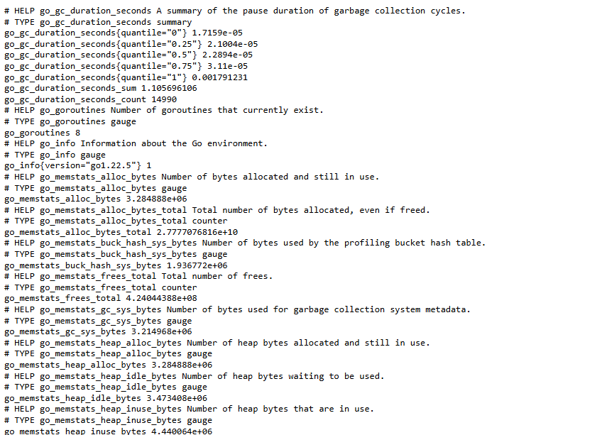

Prometheus
Установка Prometheus в Docker compose
- Создать файл
docker-compose.yml:
version: "3.9"
services:
prometheus:
image: prom/prometheus:latest
container_name: prometheus
hostname: prometheus
restart: unless-stopped
command:
- --config.file=/etc/prometheus/prometheus.yml
environment:
TZ: "Europe/Moscow"
ports:
- 9090:9090
volumes:
- '{{ prometheus_config_dir_host }}:/etc/prometheus'
- '{{ prometheus_data_dir_host }}:/prometheus'
- Запустить
docker compose:
docker compose up
Установка Node Exporter в Docker compose
- Добавить в файл
docker-compose.yml:
node-exporter:
image: prom/node-exporter
container_name: exporter
hostname: exporter
restart: unless-stopped
command:
- --path.procfs=/host/proc
- --path.sysfs=/host/sys
- --collector.filesystem.ignored-mount-points
- ^/(sys|proc|dev|host|etc|rootfs/var/lib/docker/containers|rootfs/var/lib/docker/overlay2|rootfs/run/docker/netns|rootfs/var/lib/docker/aufs)($$|/)
environment:
TZ: "Europe/Moscow"
ports:
- 9100:9100
volumes:
- /proc:/host/proc:ro
- /sys:/host/sys:ro
- /:/rootfs:ro
- Перезапустить
docker compose:
docker compose up
- Проверка, что exporter работает. Открыть в браузере
https://IP-address:9100/metricsи должны увидеть: 
Добавление node_exporter в prometheus
Экспортеры добавляются в /etc/prometheus/prometheus.yml
global:
scrape_interval: 15s
scrape_configs:
- job_name: 'prometheus'
scrape_interval: 5s
static_configs:
- targets: ['localhost:9090']
- job_name: 'prometheus_node'
scrape_interval: 5s
static_configs:
- targets: ['localhost:9100']